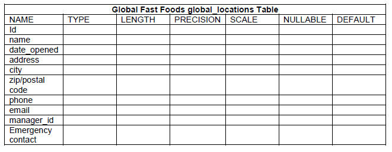
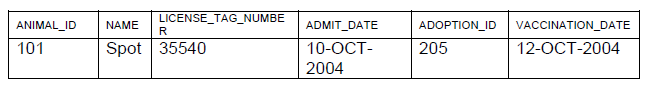

This lab will put into practice the CREATE TABLE statement for creating constraints.
Global Fast Foods has been very successful this past year and has opened several new stores. They need to add a table to their database to store information about each of their store’s locations. The owners want to make sure that all entries have an identification number, date opened, address, and city and that no other entry in the table can have the same email address. Based on this information, answer the following questions about the global_locations table. Use the table for your answers.

Using the column information for the animals table below, name constraints where applicable at the table level, otherwise name them at the column level. Define the primary key (animal_id). The license_tag_number must be unique. The admit_date and vaccination_date columns cannot contain null values.
animal_id NUMBER(6) name VARCHAR2(25) license_tag_number NUMBER(10) admit_date DATE adoption_id NUMBER(5), vaccination_date DATE
Use an editor to work on the CREATE TABLE statement before executing the statement in app express to create the animals table.
Enter one row into the table.

Write the syntax to create a foreign key (adoption_id) in the animals table that has a corresponding primary key reference in the adoptions table. Show both the column level and table level syntax. Note because you have not created an adoptions table no primary key as yet exists so we don't add this foreign key at this time.
What is the effect of setting the foreign key in the ANIMAL table to
Being writing your CREATE TABLE statements for the tables needed in your continuous assessment.
Use a text editor like Sublime to do this ensuring your syntax is correct before executing the statements in Application Express.
If your table sucessfully creates and then you wish to make a change you simply need to execute:
DROP TABLE tablename;where tablename is the name of your table.
Remember when creating your tables you must know which tables are parents and which are children. The order of creation is important when you have foreign keys. Each parent table must be created first and then the child table.